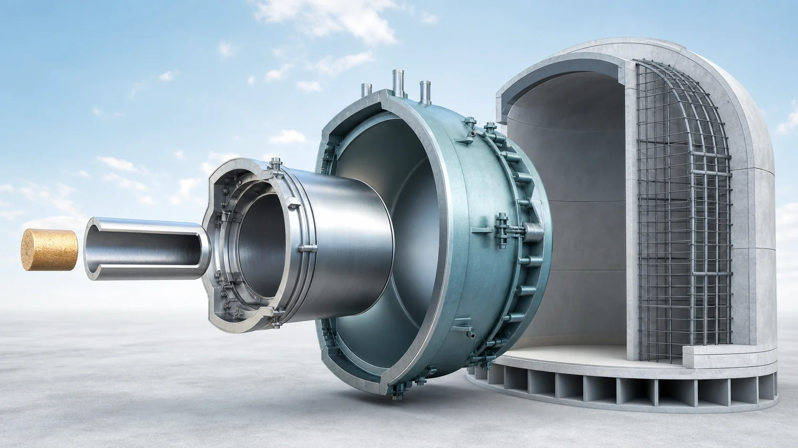
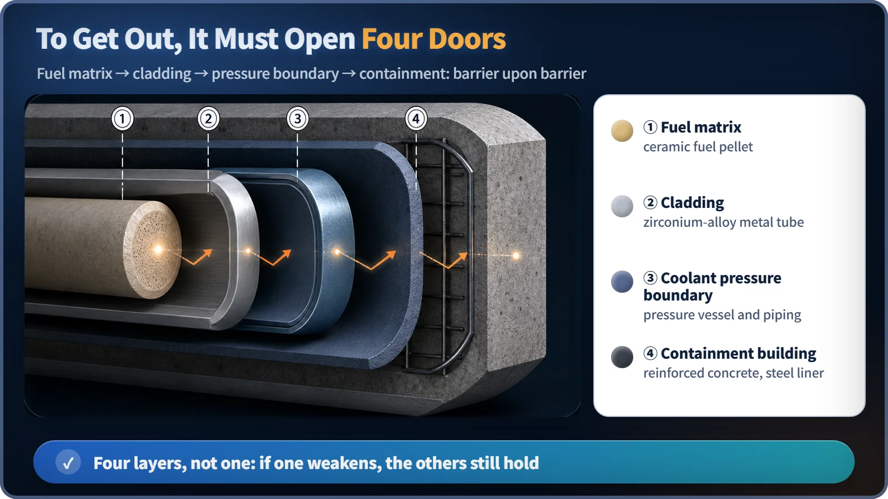
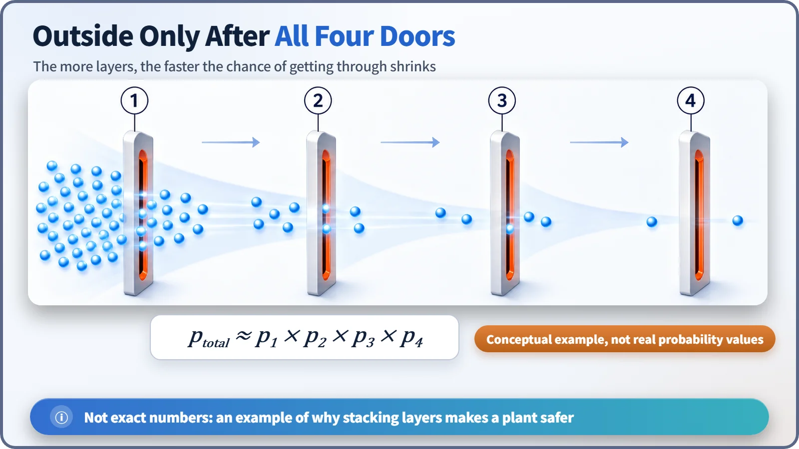

Reactor Components · 073
Escape Four Times, Get Caught Four Times — The Multiple Barriers of a Nuclear Plant
Fuel matrix, cladding, pressure boundary and containment: four independent walls that work at the same time.

Radioactive material made in a reactor core has to get past four independent barriers to reach the outside. The fuel's ceramic matrix, the metal cladding, the reactor coolant pressure boundary and the containment building all work at once, so that even if one layer falls short, the next still holds. That is defense in depth in physical form.
Gate one: a ceramic prison as hard as pottery
Escape attempt number one. The place you were born is, in fact, inside a piece of ceramic. More precisely, you are inside a fuel pellet, a small ceramic piece made by baking uranium dioxide much like pottery. This ceramic is sturdy enough to keep its shape in the hot environment of a reactor, and its crystal structure is so tight that it simply holds on to a large share of fission products like you. Think of a seed locked inside a clay pot. You're already worn out at the first gate, but it's too early to give up.
Gate two: a metal suit called the cladding
A few stubborn particles manage to squeeze out through gaps in the ceramic. But the very next thing they meet is a thin but tight metal suit: the cladding. It is a tube of zirconium alloy wrapped around the fuel pellets. It lets heat flow out to the coolant while keeping material from getting out: an annoying gatekeeper that "lets you breathe but won't let you leave."
These are the two layers handled by what we usually call a "fuel rod." It's a double lock made from two completely different materials, ceramic and metal.

Gate three: a pressurized fortress wall, the coolant pressure boundary
Say you've broken through both layers. You're still inside the reactor pressure vessel, in coolant held under very high pressure. It isn't just the pressure vessel that is tough: the vessel together with the pipes and valves connected to it forms one sealed boundary, called the reactor coolant pressure boundary. It is made of thick special steel and has to withstand high pressure, so in sheer toughness this gate goes well beyond the first two. A fortress wall you wouldn't even dream of breaching without serious resolve.
The last gate: enter the final boss, the containment building
Suppose, by some miracle, you've made it this far. Now the true last wall stands in front of you: the containment building. It is a huge, thick reinforced-concrete structure that wraps around the pressure vessel and all its piping. It also protects the equipment inside from impacts coming from outside (such as typhoons or earthquakes), but when something is trying to get out from the inside, it works the other way, as the final wall that holds it in. If you've come this far, your escape story is effectively over, because you haven't broken through any of the four layers.
Wait, why four layers?
A natural question comes up here: "Why not just make one barrier truly perfect?" The short answer is a cold premise of engineering: no matter how well you design it, you can't make the chance of a single barrier failing exactly zero. Materials can have unexpected flaws, and extreme accident conditions can arrive.
So nuclear safety design flips the thinking. Instead of betting everything on "this barrier will never be breached," it designs on the premise that "even if one layer fails to do its job, the next layer still holds." This is defense in depth, the core philosophy of nuclear safety (stacking several independent layers of safety measures), turned into a physical structure you can actually see. And one important point: these four layers are not backup devices that only kick in late, after something breaks. They are always-on barriers that work together all the time, even during normal operation.
Why stacking layers makes it so much safer: a quick look at the math
Let's get a feel with a simple example. Suppose each barrier, independently, lets material through with only a very small probability (call the chance of getting through the first gate p₁, the second p₂, the third p₃ and the fourth p₄). To truly get outside, you have to pass all four gates, so the overall chance of escape is roughly
Overall chance of escape ≈ p₁ × p₂ × p₃ × p₄
Each probability is already a small number, and you multiply four of them together, so the overall probability ends up far, far smaller than that of any single layer. Please treat this not as a precise calculation but as a picture that shows intuitively why adding layers is so effective; it does not represent real probability values for an actual plant. In reality, each barrier can run into trouble for different reasons, which is exactly why it matters that the barriers are designed independently, with different materials and principles.

Easy mix-ups
"If one barrier is perfect, aren't the rest just decoration?" No. As we've seen, raising the quality of one barrier and having several layers are two different things. However perfect you make the first gate (the ceramic fuel), that alone is no reason to remove the other three. Quality and number of layers are principles applied together; one doesn't replace the other.
"Aren't multiple barriers and defense in depth the same thing?" Strictly speaking, multiple barriers are one pillar under the larger umbrella of defense in depth. Besides these physical layers, defense in depth also includes duplicating equipment or preparing it in different ways, operator training and procedures, instrumentation and alarm systems, and plans for responding to emergencies. Today we looked only at the part you can see: the physical walls.
Today in four lines
- To hold radioactive material in, a nuclear plant stacks four independent barriers from the inside out: the fuel matrix, the cladding, the reactor coolant pressure boundary and the containment building.
- These four layers aren't backups that work only after a failure. They are always-on barriers working together all the time.
- Separately from making any one barrier perfect, increasing the number of layers itself greatly raises the overall level of safety.
- This multiple-barrier structure is defense in depth, the core philosophy of nuclear safety, built in visible physical form.
As escape stories go, our radioactive particle's was pretty anticlimactic, wasn't it? But from the point of view of nuclear safety design, an ending that is anticlimactic every single time is exactly the ending you want.